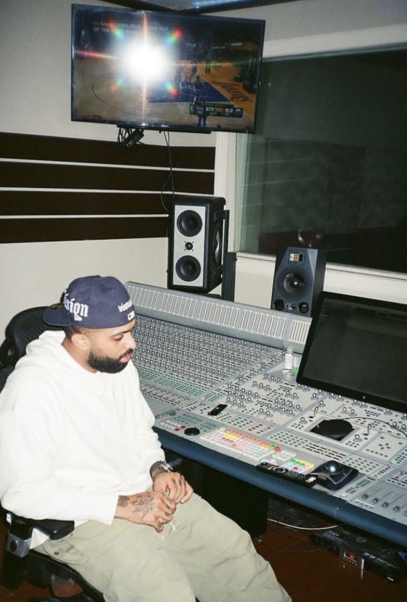

De las piscinas profesionales a la cima del Trap Latino. La historia de disciplina y versatilidad detrás del artista.

Aunque Eladio Carrión Morales nació el 26 de mayo de 1994 en Kansas City (debido al trabajo militar de su padre), su corazón y sus raíces pertenecen a Humacao, Puerto Rico. Es allí donde forjó su carácter y donde adoptó los códigos de lealtad que tanto menciona en sus canciones bajo el apodo de "La H".
Antes de llenar estadios, Eladio representó a Puerto Rico como nadador profesional, compitiendo a nivel internacional. Esta etapa le enseñó una disciplina férrea que luego aplicaría a la música. Además, sus primeros pasos en la fama no fueron cantando, sino como creador de contenido y comediante en plataformas como Vine e Instagram, demostrando su gran carisma.